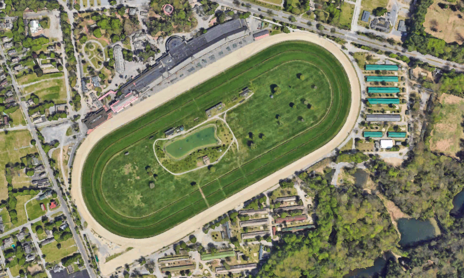

Command Center
Connecting
--:--:--
Next refresh:
--
↻ Refresh now
Saratoga Race Course
—

Live aerial — Saratoga Race Course
Main Track (Dirt)
—
—
Turf Course
—
—
N
S
W
E
—
MPH
—
Wind Forecast Scrubber
LIVE
Showing current live conditions
Track Play Analysis
HEURISTIC
Based on live current conditions.
Waiting on live conditions…
Simplified read of wind vs. stretch-run geometry + track condition — a handicapping aid, not a guarantee of how the race plays out.
Race Card — Post-Time Forecasts
+ Add Race
No races added yet — enter a race number and post time above.
Next 8 Hours
Loading…
Temperature
Feels like —
—
°F
Wind Gusts
at 10m
—
mph
Rainfall — Today
Current rate —
Last 6h —
Last 24h —
Last 48h —
—
in
Humidity
Cloud cover —
—
%
Barometric Pressure
at sea level
—
hPa
Conditions
Sunrise / Sunset —
—
Radar — Saratoga Race Course
LIVE
Loading radar…
Futurecast — Regional Precip
WINDY.COM
Multi-hour model forecast (ECMWF), with Windy's own timeline — separate from the live RainViewer radar above, which only covers the near-term.